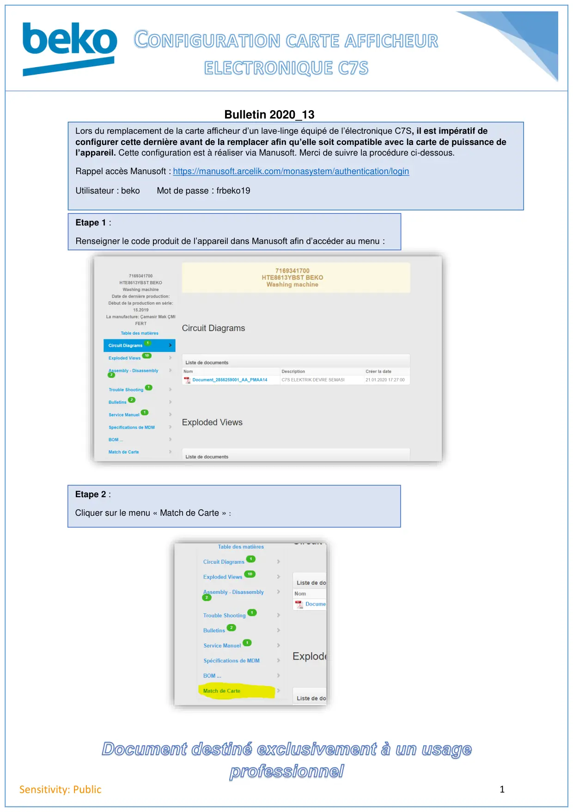
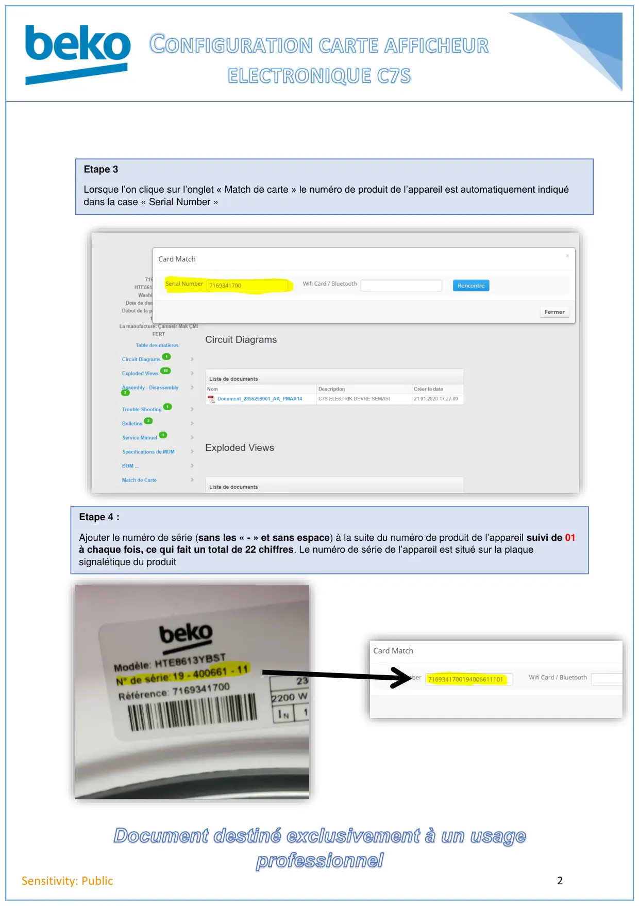
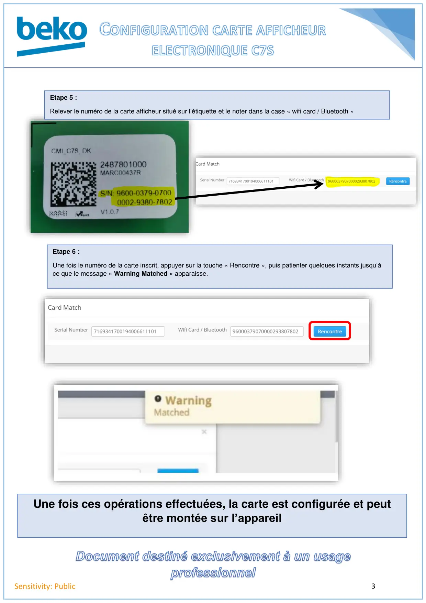
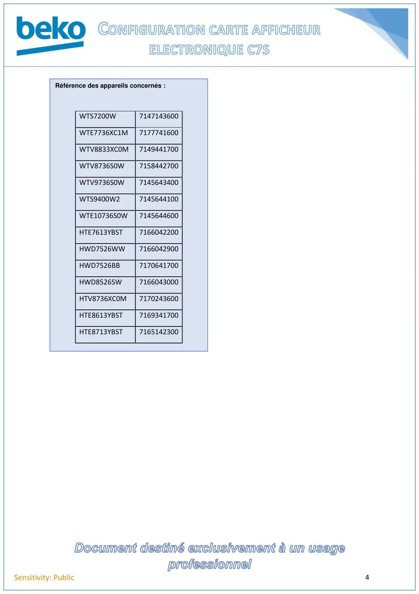

Configuration afficheur electronique C7S

1Sensitivity: PublicBulletin 2020_13Etape 1 :Renseigner le code produit de l’appareil dans Manusoft afin d’accéder au menu :Etape 2 :Cliquer sur « Match de Carte » :Lors du remplacement de la carte afficheur d’un lave-linge équipé de l’électronique C7S, il est impératif deconfigurer cette dernière avant de la remplacer afin qu’elle soit compatible avec la carte de puissance del’appareil. Cette configuration est à réaliser via Manusoft. Merci de suivre la procédure ci-dessous.Rappel accès Manusoft : https://manusoft.arcelik.com/monasystem/authentication/loginUtilisateur : beko Mot de passe : frbeko19Etape 1 :Renseigner le code produit de l’appareil dans Manusoft afin d’accéder au menu :Etape 2 :Cliquer sur le menu « Match de Carte » :
1 / 4
2Sensitivity: PublicEtape 3Lorsque l’on clique sur l’onglet «Match de carte » le numéro de produit de l’appareil est automatiquement indiquédans la case « Serial Number » :Etape 4 :Ajouter le numéro de série, à la suite du numéro de produit de l’appareil suivi de 01 à chaque fois, ce qui faitun total de 22 chiffres. Le numéro de série de l’appareil est situé sur la plaque signalétique du produit :Etape 3Lorsque l’on clique sur l’onglet « Match de carte » le numéro de produit de l’appareil est automatiquement indiquédans la case « Serial Number »Etape 4 :Ajouter le numéro de série (sans les « - » et sans espace) à la suite du numéro de produit de l’appareil suivi de 01à chaque fois, ce qui fait un total de 22 chiffres. Le numéro de série de l’appareil est situé sur la plaquesignalétique du produit
2 / 4
3Sensitivity: PublicEtape 5 :Relever le numéro de la carte afficheur situé sur l’étiquette et le noter dans la case « wifi card / Bluetooth »Etape 6 :Une fois le numéro de la carte inscrit, appuyer sur la touche « Rencontre » , puis patienter quelques instantsjusqu’à ce que le message « Warning Matched » apparaisse.Une fois ces opérations effectuées, la carte est configurée et peut être montée sur l’appareil.Etape 5 :Relever le numéro de la carte afficheur situé sur l’étiquette et le noter dans la case « wifi card / Bluetooth »Etape 6 :Une fois le numéro de la carte inscrit, appuyer sur la touche « Rencontre », puis patienter quelques instants jusqu’àce que le message « Warning Matched » apparaisse.Une fois ces opérations effectuées, la carte est configurée et peutêtre montée sur l’appareil
3 / 4
4Sensitivity: PublicRéférence des appareils concernés :Référence des appareils concernés :WTS7200W7147143600WTE7736XC1M7177741600WTV8833XC0M7149441700WTV8736S0W7158442700WTV9736S0W7145643400WTS9400W27145644100WTE10736S0W7145644600HTE7613YBST7166042200HWD7526WW7166042900HWD7526BB7170641700HWD8526SW7166043000HTV8736XC0M7170243600HTE8613YBST7169341700HTE8713YBST7165142300
4 / 4